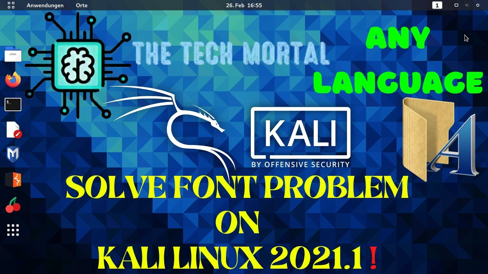

How To Install Bangla Font on Kali Linux
Hello Everyone, Today in this post I’m gonna show you How To Install Bangla Font on Kali Linux
on your Kali Linux Operating System, If you are from Bangladesh then you may have a problem with your Kali Linux Browsers that not supporting Bangla Language or Bangla font.
So today I will show you how to fix that font problem and support Bangla language on your Kali Linux machine.
I Will Provide a script that will download and install 70 Bangla fonts (with variations of them) without searching. Just run this script in your Linux based PC/Laptops terminal and get all Bangla fonts instantly without hassle.
Install Bangla Font on Kali Linux
The fonts are:
- AdorshoLipi_20-07-2007.ttf
- AponaLohit.ttf
- Bangla.ttf
- BenSen.ttf
- Charu Chandan 3D Ansi-Italic.ttf
- Charu Chandan 3D Ansi-Regular.ttf
- Charu Chandan 3D Unicode-Italic.ttf
- Charu Chandan 3D Unicode-Regular.ttf
- Charu Chandan Ansi-Bold Italic.ttf
- Charu Chandan Ansi-Bold.ttf
- Charu Chandan Ansi-Italic.ttf
- Charu Chandan Ansi-Regular.ttf
- Charu Chandan Blood Drip Ansi-Bold Italic.ttf
- Charu Chandan Blood Drip Ansi-Bold.ttf
- Charu Chandan Blood Drip Ansi-Italic.ttf
- Charu Chandan Blood Drip Ansi-Regular.ttf
- Charu Chandan BloodDrip Unicode-Bold Italic.ttf
- Charu Chandan BloodDrip Unicode-Bold.ttf
- Charu Chandan BloodDrip Unicode-Italic.ttf
- Charu Chandan BloodDrip Unicode-Regular.ttf
- Charu Chandan Hard Stroke Ansi-Bold Italic.ttf
- Charu Chandan Hard Stroke Ansi-Bold.ttf
- Charu Chandan Hard Stroke Ansi-Italic.ttf
- Charu Chandan Hard Stroke Ansi-Regular.ttf
- Charu Chandan Unicode-Bold Italic.ttf
- Charu Chandan Unicode-Bold.ttf
- Charu Chandan Unicode-Italic.ttf
- Charu Chandan Unicode-Regular.ttf
- CharuChandan HardStroke Unicode-Bold Italic.ttf
- CharuChandan HardStroke Unicode-Bold.ttf
- CharuChandan HardStroke Unicode-Italic.ttf
- CharuChandan HardStroke Unicode-Regular.ttf
- Charukola Ansi- Bold Italic.ttf
- Charukola Ansi- Bold.ttf
- Charukola Ansi-Italic.ttf
- Charukola Ansi-Regular.ttf
- Charukola Ansi-Ultra Light Italic.ttf
- Charukola Ansi-Ultra Light.ttf
- Charukola Round Head Ansi-Bold Italic.ttf
- Charukola Round Head Ansi-Bold.ttf
- Charukola Round Head Ansi-Italic.ttf
- Charukola Round Head Ansi-Regular.ttf
- Charukola Round Head Unicode-Bold Italic.ttf
- Charukola Round Head Unicode-Bold.ttf
- Charukola Round Head Unicode-Italic.ttf
- Charukola Round Head Unicode-Regular.ttf
- Charukola Unicode-Bold Italic.ttf
- Charukola Unicode-Bold.ttf
- Charukola Unicode-Italic.ttf
- Charukola Unicode-Regular.ttf
- Charukola Unicode-Ultra Light Italic.ttf
- Charukola Unicode-Ultra Light.ttf
- Lohit_14-04-2007.ttf
- Mukti_1.99_PR.ttf
- Nikosh.ttf
- NikoshBAN.ttf
- NikoshGrameen.ttf
- NikoshLight.ttf
- NikoshLightBan.ttf
- NotoSansBengali-Black.ttf
- NotoSansBengali-Bold.ttf
- NotoSansBengali-ExtraBold.ttf
- NotoSansBengali-ExtraLight.ttf
- NotoSansBengali-Light.ttf
- NotoSansBengali-Medium.ttf
- NotoSansBengali-Regular.ttf
- NotoSansBengali-SemiBold.ttf
- NotoSansBengali-Thin.ttf
- NotoSansBengaliUI-Black.ttf
- NotoSansBengaliUI-Bold.ttf
- NotoSansBengaliUI-ExtraBold.ttf
- NotoSansBengaliUI-ExtraLight.ttf
- NotoSansBengaliUI-Light.ttf
- NotoSansBengaliUI-Medium.ttf
- NotoSansBengaliUI-Regular.ttf
- NotoSansBengaliUI-SemiBold.ttf
- NotoSansBengaliUI-Thin.ttf
- Siyam Rupali ANSI.ttf
- Siyamrupali.ttf
- SolaimanLipi_20-04-07.ttf
- SutonnyMJ.ttf
- akaashnormal.ttf
- kalpurush.ttf
- kalpurush_ANSI.ttf
- mitra.ttf
- muktinarrow.ttf
- sagarnormal.ttf
- vrinda.ttf
How To Install: Now open your terminal copy full line and paste in your terminal and press enter. And after some time you will see that all fonts are downloading and installing
Code :
wget --no-check-certificate https://fahadahammed.com/extras/fonts/font.sh -O font.sh;chmod +x font.sh;bash font.sh;rm font.sh
That’s All about How To Install Bangla Font on Kali Linux
Watch Video Tutorial On It :The Tech Mortal
More Blog Post: https://thetechmortal.xyz/blog